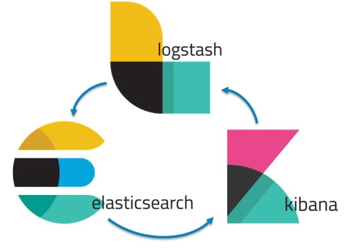

This project investigates the application of machine learning techniques to enhance and predict
customer satisfaction in the airline industry. Using the Kaggle "Airline Passenger Satisfaction" dataset,
the study involved extensive data preprocessing, exploratory data analysis, and the application
of multiple machine learning models. The goal was to identify key factors influencing customer satisfaction and
develop predictive models to forecast customer sentiment, ultimately providing actionable
insights to improve airline services.
The project aimed to analyze a World Development Indicators (WDI) dataset to predict life
expectancy at birth using various statistical and machine learning techniques.
The analysis involved extensive data preprocessing, handling missing values,
and developing the best linear model to predict life expectancy in 2020.
The project explores the analysis of policing data from the Center for Policing Equity (CPE) dataset,
focusing on incidents, use of force, complaints, and other relevant information.
The aim was to evaluate police policies' effectiveness, identify patterns and trends in policing,
and assess the impact of police actions on the community.
The project utilized numerical and graphical summaries to explore the given housing market dataset,
classifying homes based on their condition. Key objectives included predicting house prices
and assessing house conditions using various machine learning models.
Techniques such as logistic regression, random forest, linear regression, and resampling methods were employed.
This project focused on classifying tweets as offensive or non-offensive using machine learning models,
specifically RoBERTa and FastText, applied to the OLID dataset.
The study compared the performance of these models and explored the impact of dataset size on their effectiveness.
RoBERTa outperformed FastText in accuracy but required more computational resources,
while FastText was quicker and more memory-efficient.

This project focused on designing and implementing search solutions using
Elasticsearch to analyze a dataset containing news articles.
The primary goal was to create effective analyzers for organizing and searching the dataset,
followed by indexing and retrieving information based on user queries.